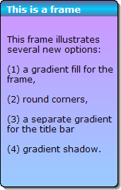

Placing Lines and Frames
Lines and frames can make layouts more visually appealing and easier to read. Tools for creating these objects can be found on the Toolbox , discussed earlier in this chapter. For more information on using these tools, refer to the following subsections.
Placing Frames
Frames let you enhance the appearance of forms, reports, letters, and labels. Frames can be used to place a border around several objects. In cases where you want a border around just one object, you can use the object's border properties.
To place a frame on a form:
Select the Frame tool from the Toolbox.
Click and drag over the area on which you want to place the object. When you release the mouse button, the object is inserted.

A sample frame created in Alpha Anywhere
Defining Frame Properties
To display the Properties dialog for a frame, right click on it and select Properties... .
To define the text of the frame caption, display its Setup tab and:
Optionally, enter the caption into the Frame text control.
Optionally, click Xdialog Frame Text to define content that may contain text, images, and buttons.
To define the style of the frame caption, display its Font tab, and select the caption's font, point size, attributes, and color.
To adjust the dimensions of a frame, display its Dimensions tab, and set its Left and Top coordinates, and its Width and Height. You may change the units of measure on the Settings dialog.
To adjust the border or fill styles of a frame, display the Border tab.
To adjust the border properties of the frame, refer to Defining Border Style and Color.
To adjust the shadow properties of the frame, refer to Defining Shadows.
To adjust the fill properties of the frame, refer to Defining Fill Style and Color.
To adjust the border or fill styles of a frame's caption, display the Border tab and click Frame Formatting.
If you want a different fill style for the frame caption, check Enable separate formatting for Frame Heading. Clear this check box if you wish to remove the caption's fill style.
To adjust the fill properties of the caption, refer to Defining Fill Style and Color.
Click OK to continue.
Placing Lines
Lines can also enhance the appearance of layouts. To place a line on a form:
To place a line on a form:
Select the Line tool from the Toolbox.
Click and drag over the area on which you want to place the object. When you release the mouse button, the object is inserted.
Select whether you want a Thin Line, Medium Line, or Thick Line and click OK.
To adjust the color, thickness, or style of a line, right click on it and select Properties... > Setup from the right-click menu.
To adjust the dimensions of a line, right click on it and select Properties... > Dimensions from the right-click menu.
See Also
Using the Toolbox, Placing a Field on a Form, Line Properties, Frame Properties